Projet Zabbix
Mise en place d'une tour de contrôle pour l'infrastructure informatique de l'entreprise
L'Idée
Mettre en place une tour de contrôle pour l'infrastructure informatique de l'entreprise. Un système de supervision complet et moderne pour garantir la disponibilité et les performances des ressources IT.
Contexte du Projet
Besoin : Passer d'une maintenance "réactive" (on répare quand ça casse) à une maintenance "proactive" (on intervient avant la panne).
« Il vaut mieux prévenir que guérir »
Cette transition est essentielle pour minimiser les arrêts serveur et améliorer la productivité de l'entreprise en identifiant les problèmes potentiels avant qu'ils ne deviennent critiques.
Qu'est-ce que Zabbix ?
Zabbix est un logiciel qui supervise de nombreux paramètres d'un réseau (débit, connexion, requêtes) ainsi que la santé et l'intégrité des serveurs et des ordinateurs clients.
C'est une solution de monitoring complète et flexible, capable de :
- Surveiller les performances réseau et serveurs
- Collecter et analyser des données en temps réel
- Alerter en cas d'anomalies
- Générer des rapports détaillés
- Supporter des déploiements à grande échelle
Le Monitoring des PC Clients
Vous pouvez surveiller tout votre parc informatique de la même manière que vos serveurs. Pour un PC client, Zabbix peut vous dire :
Santé Matérielle
- État du disque dur (prédiction de panne)
- Température du processeur
- Utilisation de la RAM
Inventaire
- Quel logiciel est installé
- Quelle version de Windows est utilisée
- Quel est le numéro de série du PC
Disponibilité
- Est-ce que le PC de la comptabilité est allumé et connecté au réseau ?
- Latence de connexion
Pourquoi Zabbix ?
Open Source
100% Open Source - pas de coût de licence
Polyvalent
Extrêmement polyvalent pour surveiller serveurs, réseaux et applications
Multi-plateforme
Applicable à nos serveurs ET à nos PC clients (Windows principalement)
Scalabilité
Supporte des déploiements à petite et grande échelle
Partie I : L'Installation
L'installation se déroulera sur un serveur Debian (Ubuntu fonctionne également) virtualisé depuis notre serveur local de l'entreprise. Objectif : zéro coûts supplémentaires.
Étape A : Configuration Serveur
La première partie de l'installation se fera via le Shell de notre serveur :
1. Installation du dépôt Zabbix
On commence par télécharger et installer le paquet qui contient les sources officielles de Zabbix.
2. Installation du serveur, du frontend et de l'agent
Cette commande installe le cœur de Zabbix ainsi que les composants web nécessaires.
3. Création de la base de données
Connectez-vous à MariaDB pour créer la base et l'utilisateur. Remplacez votre_mot_de_passe par un mot de passe sécurisé.
Une fois dans l'invite de commande MariaDB, tapez ces lignes une par une :
4. Importation du schéma initial
Importez les données de base dans la base de données que vous venez de créer. Le système vous demandera le mot de passe de l'utilisateur zabbix défini juste au-dessus.
Note : Une fois l'importation terminée (cela peut prendre quelques secondes), désactivez l'option de création de fonctions :
5. Configuration du serveur Zabbix
Modifiez le fichier de configuration pour indiquer à Zabbix quel mot de passe utiliser pour se connecter à la base de données.
Cherchez la ligne # DBPassword= et modifiez-la comme ceci (enlevez le #) :
6. Redémarrage et activation des services
Lancez les services et faites en sorte qu'ils démarrent automatiquement avec le serveur.
7. Finalisation via l'interface Web
Ouvrez votre navigateur et rendez-vous à l'adresse suivante : http://adresse_ip_du_serveur/zabbix
Suivez l'assistant de configuration (tout devrait être au vert). Les identifiants par défaut sont :
- Utilisateur : Admin
- Mot de passe : zabbix
Étape B : Configuration Web
Une fois l'installation via ligne de commande terminée, la seconde partie de l'installation s'effectue à la première ouverture de l'application / panel web de Zabbix.
Pour accéder au panel de l'interface Zabbix on rentre : IP_du_serveur/zabbix dans notre navigateur.
Écran 1 : Sélection de la langue
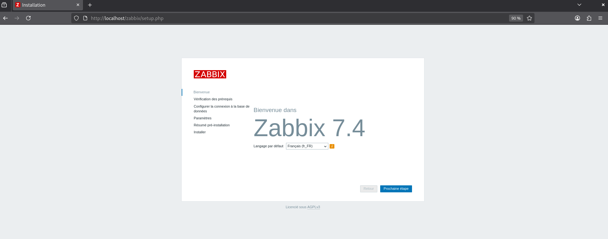
Cliquer sur "Prochaine étape"
Écran 2 : Vérification des dépendances
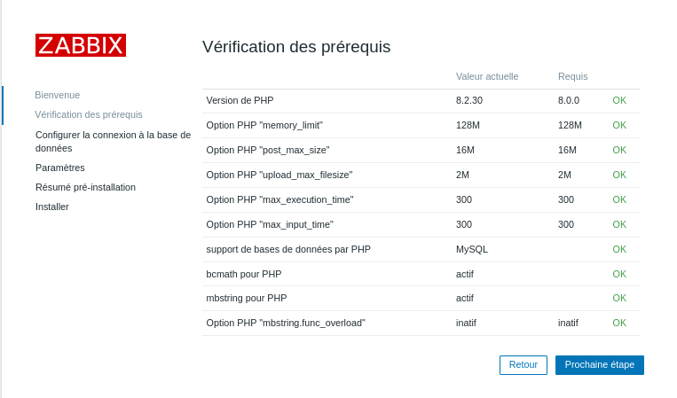
Écran 3 : Configuration de la base de données
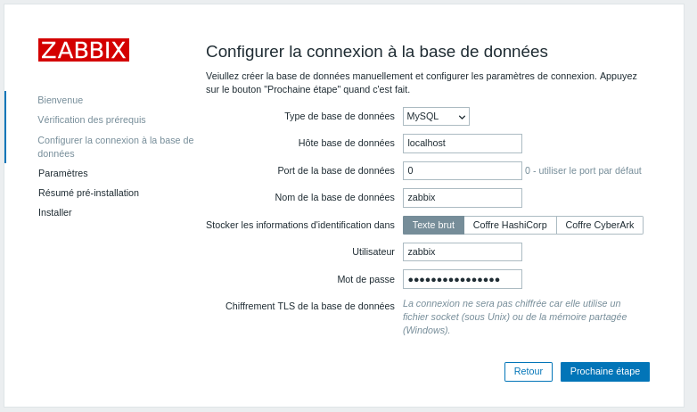
Cette interface permet de définir les paramètres de communication nécessaires pour que l'interface PHP de Zabbix puisse lire et écrire des données dans le système de gestion de base de données.
Il est alors nécessaire de renseigner :
- Type de base de données : MySQL (Si MariaDB a été utilisé, sélectionner tout de même MySQL car les deux fonctionnent de la même manière)
- Hôte de base de données : C'est en principe notre machine sur laquelle est installé Zabbix (localhost), sinon renseigner l'adresse de la base donnée externe
- Port de la base de données : laisser à 0 (port par défaut utilisé par Zabbix)
- Nom de la base de données : zabbix (Nom assigné précédemment)
- Stocker les informations d'identification : Par soucis d'efficacité nous allons choisir Texte brut, mais si l'installation s'effectue dans une grande entreprise il faudra préconiser l'utilisation d'un Coffre HashiCorp (stockage externe et sécurisé du mot de passe)
- Utilisateur / Mot de passe : Les identifiants créés précédemment lors de l'étape A
Écran 4 : Paramètres serveur
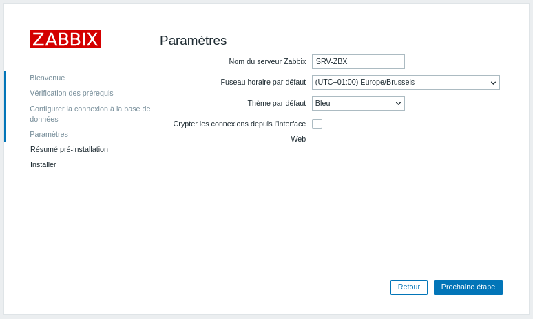
Écran 5&6 : Vérification et confirmation
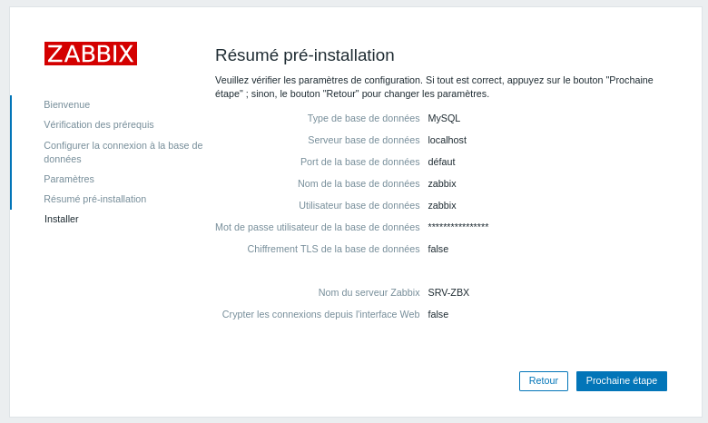
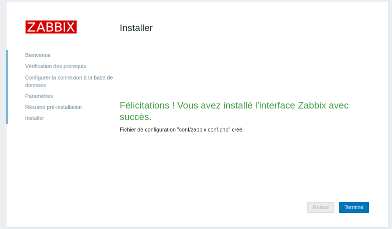
Écran 7 : Résumé et confirmation
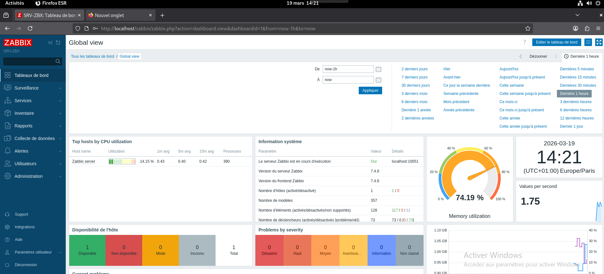
Installation de l'Agent Zabbix
Une fois arrivé sur l'interface, pour y ajouter un nouvel appareil à superviser, la meilleure manière est d'installer l'agent Zabbix. Voici la procédure simple sur un Windows Server :
Téléchargement de l'agent
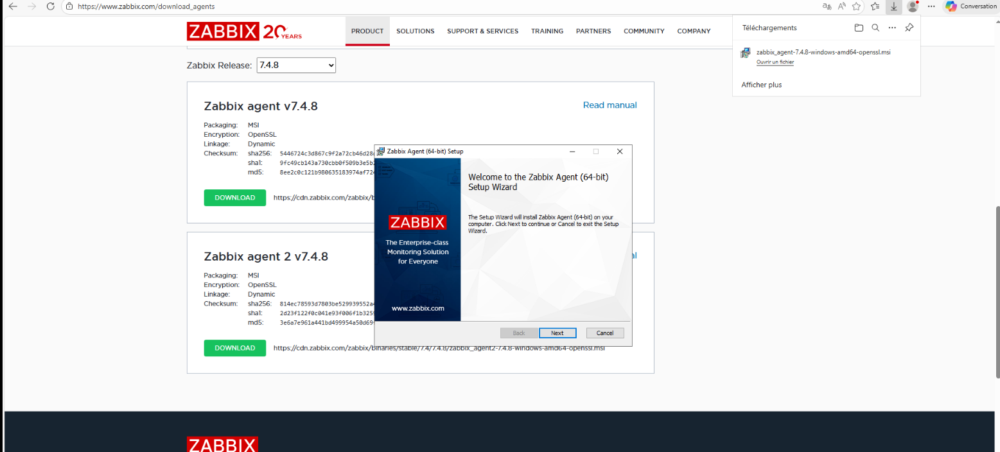
Puis sélectionner l'OS de la machine en question, télécharger et lancer l'installeur.
Sélection du système d'exploitation
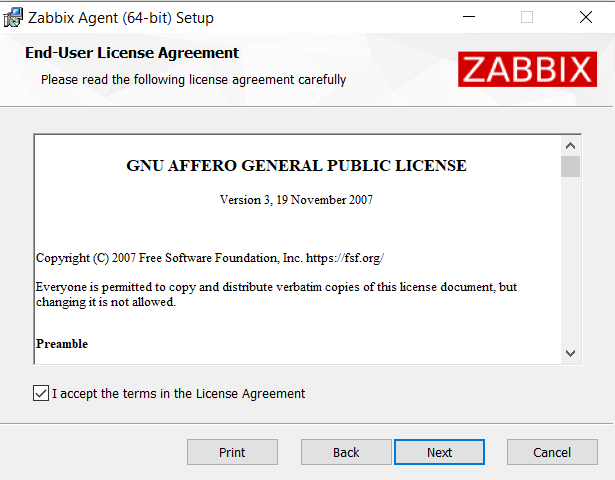
Installation et configuration
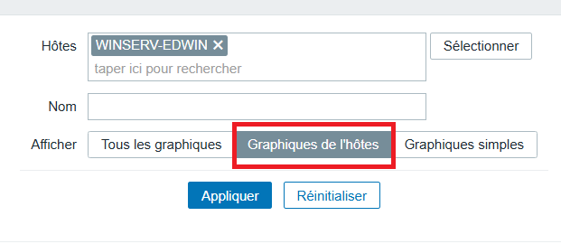
Paramètres de configuration critiques
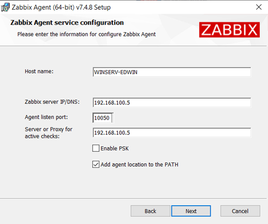
Il est crucial de configurer :
- Host name : Mettre le nom exact de la machine. Pour en être sûr → CMD >
hostname - Zabbix server IP/DNS : Indiquer l'adresse IP du serveur Zabbix
- Agent listen port : 10050 (Le port par défaut utilisé par Zabbix)
- Server or Proxy for active checks : Également l'adresse IP du serveur Zabbix, si aucun proxy Zabbix n'est utilisé
- Cocher : "Add agent location to the PATH"
Ajout de l'agent sur l'interface Zabbix
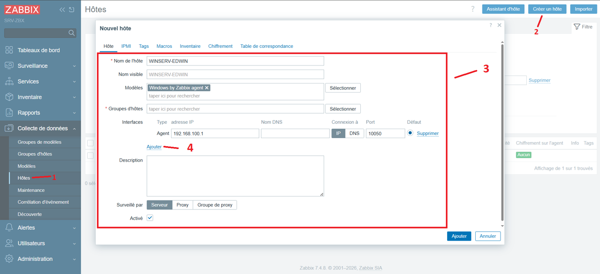
Dans le formulaire de création d'hôte :
- Nom de l'hôte : Indiquer le nom exact de la machine (ex: WINSERV-EDWIN)
- Modèles : Windows By Zabbix Agent
- Ajouter : Agent
- Groupes d'hôtes : Windows Servers
- Adresse IP : Indiquer l'IP de la machine
Confirmation et statut ZBX

Nous avons désormais accès aux différents graphiques relatifs aux statistiques de RAM, stockage, CPU etc...
Visualisation des graphiques

Graphiques détaillés de l'hôte

Conclusion
Déploiement Réussi
Vous disposez maintenant d'une solution de monitoring complète et open source pour superviser l'intégralité de votre infrastructure informatique.
Avantages clés du déploiement :
- Passage à une maintenance proactive
- Visibilité complète sur l'infrastructure (serveurs + clients)
- Aucun coût de licence
- Alertes en temps réel sur les anomalies
- Historique et graphiques détaillés
- Scalabilité pour des déploiements futurs